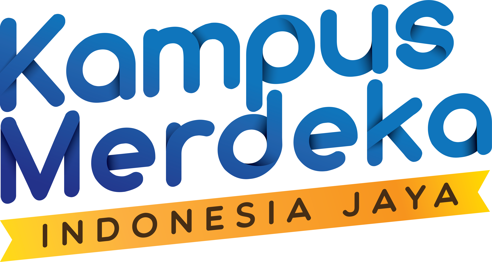
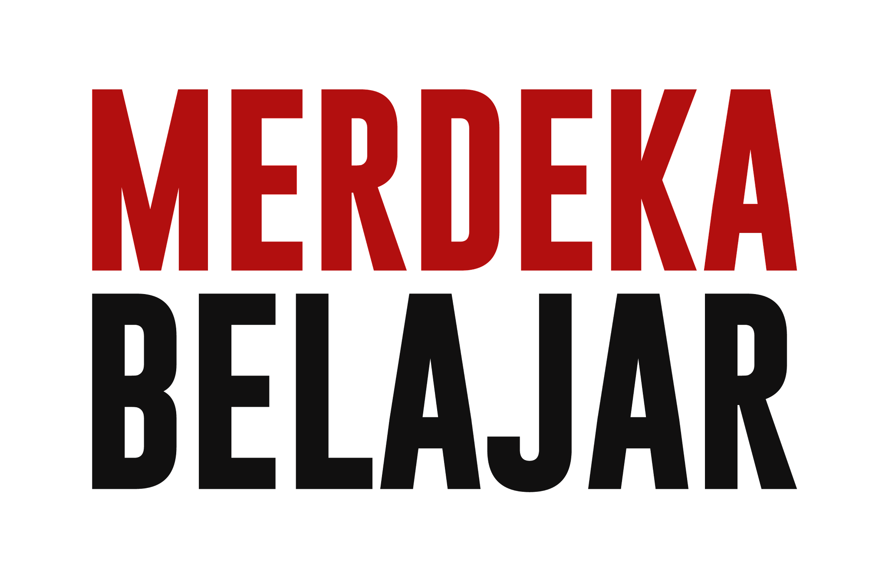
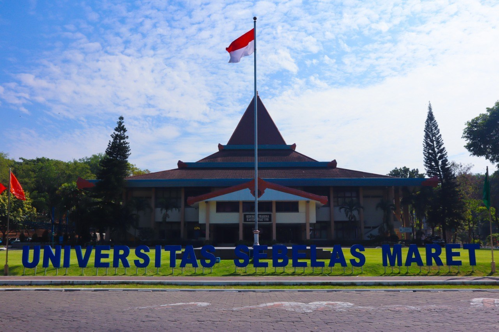
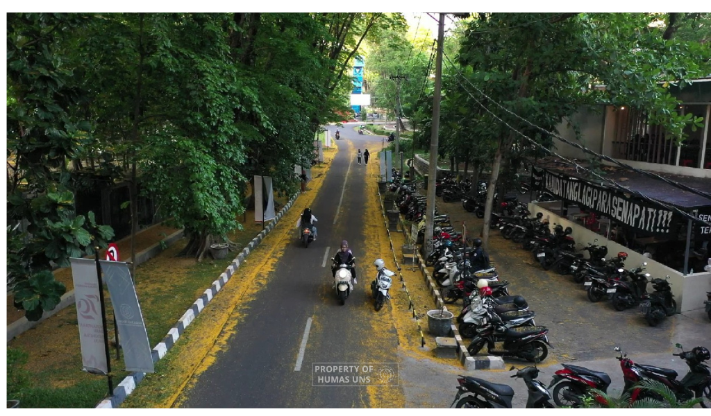
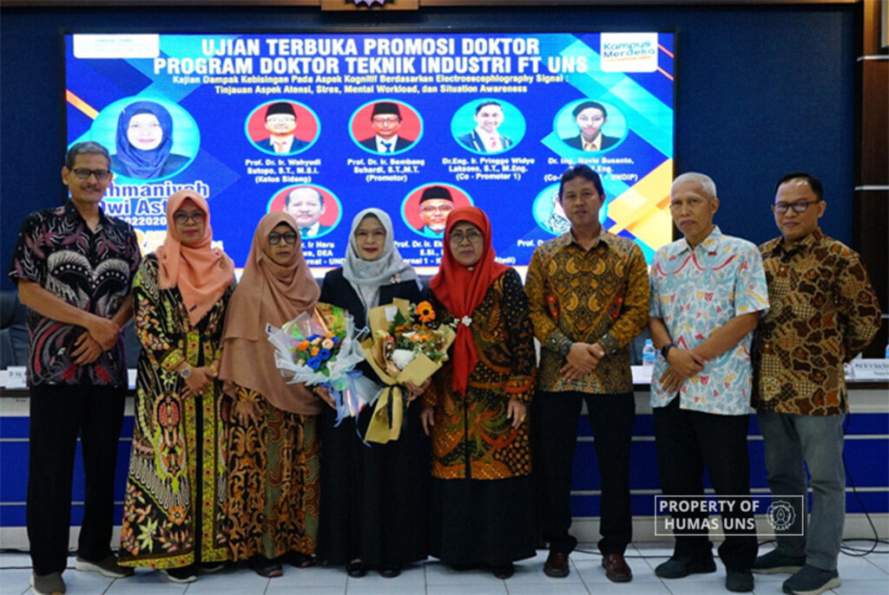
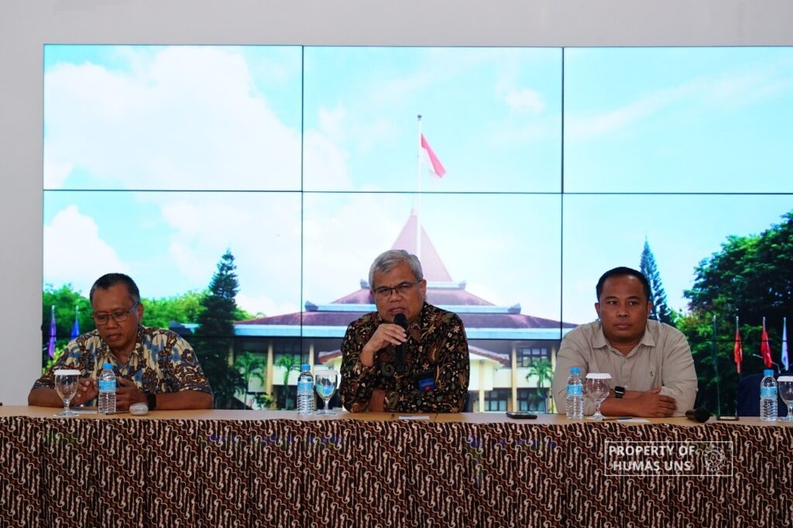

Mangesthi Luhur Ambangun Nagara


UNS – Suasana musim gugur yang biasanya ditemukan di Eropa, kini dapat dirasakan di...

UNS – Program Studi (Prodi) Doktor (S3) Teknik Industri Fakultas Teknik (FT) Universitas Sebelas...

UNS – Rektor Universitas Sebelas Maret (UNS) Surakarta, Prof. Dr. Hartono, dr. M.Si, menggelar acara...